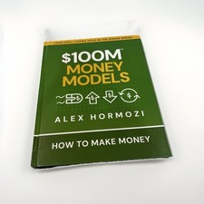

Library › Business & Startups
$100M Money Models — Summary & Key Lessons

How to make money — the sequencing playbook that turns every customer profitable in the first 30 days.
📖 OPEN THE FULL INTERACTIVE BREAKDOWN →🌐 Read it in Hindi, Hinglish, Gujarati, Tamil & 22 more languages — free, with audio.
💡 The Big Idea
Third in Hormozi's Acquisition.com trilogy ($100M Offers, $100M Leads), Money Models answers the question that kills most growing businesses: cash flow. A money model is the deliberate SEQUENCE of offers — attraction offers to get customers in, upsells to maximize each sale, downsells to catch the 'no's, and continuity for recurring income. The goal, what Hormozi calls Client-Financed Acquisition: make more gross profit from a customer in the first 30 days than it costs to acquire and serve them — so every customer literally funds the acquisition of the next, and you can scale without limits, ads paid by yesterday's sales.
🧠 The 7 Key Lessons
Lesson 1: The Money Model: Sequence Beats Everything
Part 1: What a Money Model Is
Most businesses have ONE offer and pray. A money model is a designed chain: what you sell first (to convert strangers cheaply), what you sell immediately after (to multiply the transaction), what you offer people who say no (to rescue the sale), and what you sell forever (to stabilize income). Same products, different sequence, wildly different economics. The measuring stick is 30-day gross profit per customer versus cost to acquire and fulfill — clear that bar and advertising stops being an expense; it becomes a money printer with a one-month delay.
📖 Example: Hormozi's gym turnaround story: the same gym selling a $99/month membership straight-up struggled to afford ads. Restructured — a paid 6-week challenge up front (covers ad spend day one), supplements and personal training offered at signup (doubles… Read the full example →
⚡ Do this: Map your current 'money model' honestly: What's your attraction offer? Upsell? Downsell? Continuity? If you have blanks — those blanks are the plan.
Lesson 2: Client-Financed Acquisition: The 30-Day Rule
Part 1: The Core Math
The rule: 30-day gross profit per customer ≥ 2x (CAC + cost of fulfillment). Hit it and growth self-funds — you never need to 'save up' for marketing again, and competitors relying on patient capital can't keep up with you. Miss it and every new customer digs a cash hole that growth only deepens (this is how businesses grow themselves to death). The three levers: raise how much customers pay up front, speed up WHEN they pay, and cut what acquisition costs. Most founders obsess over the third lever; the first two are where the fortunes are.
📖 Example: Two identical companies spend ₹1,000 to acquire a customer worth ₹12,000 over two years. Company A collects ₹500 in month one — every sale creates a cash crunch; growth is capped by savings. Company B front-loads ₹2,500 through a paid trial + upsell — every… Read the full example →
⚡ Do this: Calculate your number today: average 30-day gross profit per new customer ÷ (CAC + fulfillment cost). Under 2? Redesign the first 30 days before spending another rupee on ads.
Lesson 3: Attraction Offers: Get Paid to Acquire Customers
Part 2: Attraction Offers
The front door of the model: offers designed to convert cold strangers fast — win-your-money-back challenges, paid trials with bonuses, 'free' offers with paid shipping/deposit, giveaways where every loser gets a credit. The counterintuitive principle: a small paid commitment beats free, because payment filters for seriousness and funds the marketing. Design attraction offers to break even at worst — you're buying customers at zero net cost, and the real business happens in what comes next. The offer should be so asymmetric (huge value, tiny risk) that saying no feels dumber than saying yes.
📖 Example: The win-your-money-back challenge, Hormozi's gym classic: pay $500 for the 6-week transformation; hit your targets (show up, follow the plan) and you can take the $500 back — or roll it into membership. Serious people join (they paid), completion rates soar… Read the full example →
⚡ Do this: Build one attraction offer this month: name a concrete result, a short timeframe, a real stake, and a guarantee that transfers the risk to you. Launch it to 20 prospects.
Lesson 4: Upsells: The Moment of Maximum Yes
Part 3: Upsell Offers
The instant after someone buys is the most valuable moment in your business: trust is peaked, wallet is open, and the buying state is active — a yes begets a yes. Sell the thing that makes the first thing work better/faster/easier: done-for-you versions, speed, quantity, complementary tools. Rule of thumb: the upsell should be a logical 'and' not a random 'also' — it completes the outcome they just bought. Businesses that skip the upsell moment leave the majority of potential first-month profit on the table, then wonder why ads 'don't work.'
📖 Example: McDonald's built an empire on five words: 'Do you want fries with that?' — near-zero cost, offered at the exact moment of purchase, attached to the existing decision. Hormozi's version at scale: the $500 challenge buyer is immediately offered supplements +… Read the full example →
⚡ Do this: Script your fries question: within 60 seconds of every sale, offer ONE thing that makes their purchase work better. Write it, train it, measure attach rate weekly.
Lesson 5: Downsells: Never Let a No Be the End
Part 4: Downsell Offers
Most 'no's aren't rejections of the outcome — they're rejections of the price, the timing, or the risk. A downsell keeps the relationship alive by changing the variable that caused the no: payment plans (same price, smaller bites), trials (smaller commitment), 'lite' versions (smaller scope), or free-with-deposit structures (smaller risk). The economics are pure profit: these are customers you already paid to acquire; rescuing even 20% of the no's can be the difference between a money model that clears the 30-day bar and one that misses. The sale isn't over at no — it's over at goodbye.
📖 Example: Hormozi's structure: $2,000 program gets a no → offer the same program at $200/month for 12 months (payment plan) → still no → offer the self-serve version at $500 → still no → free workshop with a refundable deposit. Each step converts a slice of would-be… Read the full example →
⚡ Do this: Write your downsell ladder: for your main offer, script the payment-plan version, the lite version, and the deposit version. Deploy them in that order on every no for two weeks.
Lesson 6: Continuity: The Cash Flow That Compounds
Part 5: Continuity Offers
One-off revenue means starting every month at zero. Continuity — memberships, subscriptions, retainers, communities — is what turns a chaotic income into an ascending floor. Hormozi's mechanics for making it stick: bonuses for committing longer, rate-lock guarantees ('price never rises while you stay'), consumption design (people stay for what they USE — drive usage in week one), and exit friction that's ethical (annual bonuses, not hostage contracts). The compounding rule: if monthly churn is under control, every month's new cohort stacks on the last — eighteen months later, the 'boring' recurring line quietly exceeds the launch-spike line.
📖 Example: The math Hormozi hammers: a business adding 50 members/month at ₹5,000 with 5% churn grows to ₹40+ lakh/month recurring within two years — from the SAME sales effort that a one-off business would need to repeat from scratch monthly. Netflix beats Blockbuster… Read the full example →
⚡ Do this: Add one continuity layer to your business this quarter: membership, maintenance plan, retainer, or community. Include a rate-lock and a first-week consumption ritual.
Lesson 7: Sequencing & Scaling: The Model Is the Moat
Part 6: Putting It All Together
The full loop: attraction offer converts the stranger and covers the ad → upsell multiplies the first transaction → downsell rescues the no's → continuity stacks the floor higher every month → the 30-day gross profit funds MORE ads than yesterday, and the loop spins faster. Hormozi's discipline rules: change ONE offer at a time and measure; don't add a new stage until the current one converts; and reinvest the front-end profit into acquisition until the market, not cash, is your constraint. Competitors copying your product can't copy your sequence economics — the model, not the merchandise, is the moat.
📖 Example: Why can one company profitably pay ₹2,000 per lead while its competitor caps at ₹200 for the same customer? Not better ads — a better money model. The first collects ₹5,000 in 30-day gross profit per customer; the second collects ₹400. The first buys every… Read the full example →
⚡ Do this: Run the weekly money-model review: 30-day GP per customer, CAC, attach rate (upsell), rescue rate (downsell), churn (continuity). Improve exactly one number per week.
✅ 5-Step Action Plan
- Compute 30-day gross profit per customer vs 2x(CAC + fulfillment) — today.
- Launch one attraction offer with a real stake and a risk-reversing guarantee.
- Script and train the 60-second upsell on every single sale.
- Build the three-step downsell ladder for every no.
- Add continuity with rate-lock + week-one consumption ritual; review the 5 metrics weekly.
⚠️ When This Doesn't Work
A beautiful model on a spreadsheet is not a business — Quibi's model was the most elegant in media history: short premium episodes, subscriptions, star creators. It raised $1.75 billion on the model and died in six months because nobody wanted it. Models describe how money flows; they don't prove that it will. Before falling in love with the model, find the one stubborn customer who pays for it. Everything else is architecture for an empty building.
💀 The Graveyard Proves It
📱 Quibi — $1.75 Billion, Six Months, Gone. Burn: $1.75B in 6 months. Read the full case study →
💬 Best Quotes from $100M Money Models
- “The goal isn't to make money eventually. It's to make it fast enough that customers pay for their own acquisition.”
- “You're one offer sequence away from never worrying about cash again.”
- “Make people an offer so good they feel stupid saying no — then make the next one.”
Interactive version: mark lessons as read, listen in your language, share quote cards.